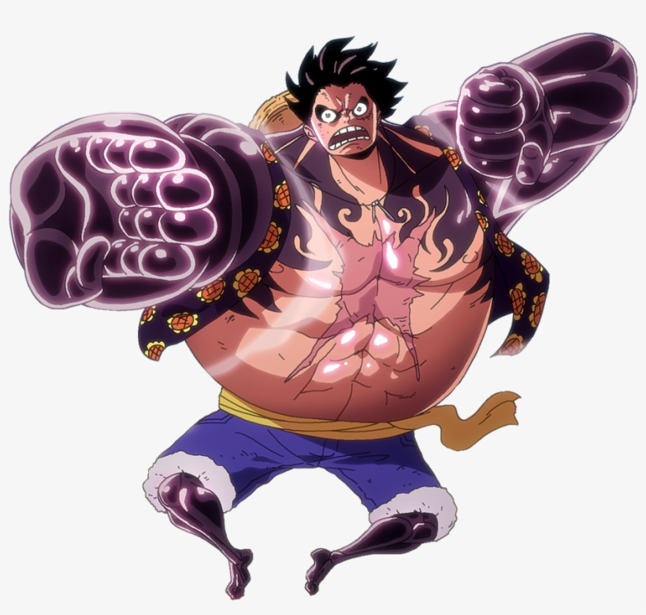
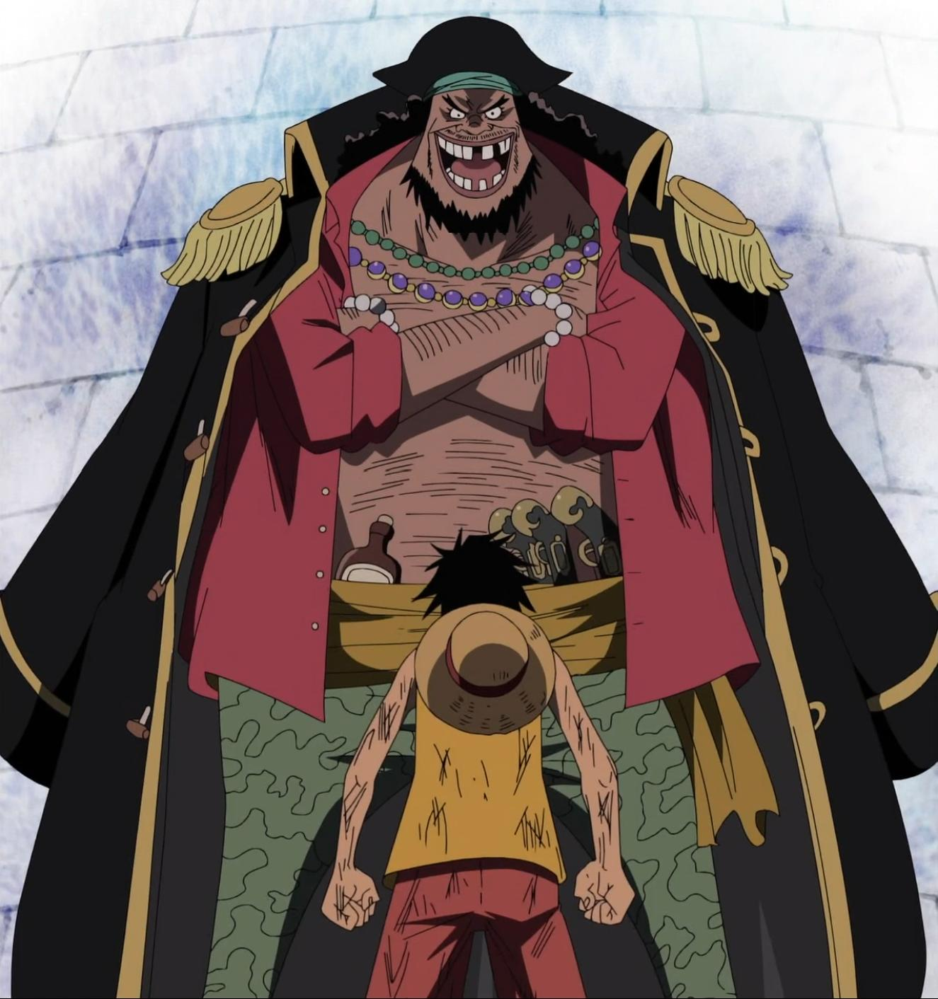

Monkey D. Luffy
Nascido em East Blue, Monkey D. Luffy é um rapaz com um sonho bem ambicioso: desde criança, ele sonhava em ser pirata! Com sete anos de idade, ele conheceu o capitão pirata Shanks, seu maior ídolo! Desde aquela época, ele desejava fazer parte da tripulação de Shanks e viajar pelo mundo atrás do famoso tesouro One Piece, para se tornar o Rei dos Piratas.
Acontece que não foi assim tão simples para começar sua jornada, Luffy não conseguiu fazer parte do bando de Shanks, que negou a entrada do menino por conta da sua pouca idade. O pirata deixou para o jovem seu chapéu de palha e o sonho de um dia se tornar o maior dos mares.
-
Pistol(imagem 1), Bazooka(imagem 2), Muchi(imagem 3), Rocket(imagem 4), Gatling gun(imagem 5),Red hawk(imagem 6)...


Os Três Haki's
Haoshoku Haki (Haki do Rei):
Haoshoku Haki é uma forma rara de Haki que não pode ser obtida por meio de treinamento. Apenas um em vários milhões de pessoas tem essa capacidade. Esse tipo de Haki permite que o usuário exerça sua força de vontade sobre os outros. Dizem que quem possui esse tipo de Haki tem as qualidades de um rei. O Haoshoku Haki é considerado uma ameaça extremamente perigosa e um ativo altamente valioso por grupos poderosos como os Almirantes da Marinha e os Yonkou.
Busoshoku Haki (Haki do Armamento):
Busoshoku Haki é uma forma de Haki que permite ao usuário usar seu espírito para criar, em essência, uma armadura invisível em torno de si, fornecendo capacidades ofensivas e defensivas potencialmente incríveis. Notavelmente, essa forma de Haki pode ser usada para ferir usuários de Akuma no Mi que são imunes a certos tipos de danos físicos, principalmente usuários de Logia.
Kenbunshoku Haki (Haki da Observação):
Kenbunshoku Haki é uma forma de Haki que permite ao usuário sentir a presença de outras pessoas, mesmo que elas estejam ocultas ou muito distantes de serem vistas naturalmente. O usuário também pode usar este Haki para prever os movimentos de um adversário pouco antes de fazê-los. Essa previsão é exibida para o usuário como uma imagem ou uma breve "premonição" do que o adversário vai fazer, e os danos que o usuário terá se realmente sofrer o ataque. Parece que quanto mais intenção de matar o inimigo tem, tornasse mais fácil dele ser previsto. Embora, os usuários mais qualificados podem prever os movimentos futuros se existem intenções assassinas no ambiente ou não. Se for treinado o suficiente o usuário consegue ver um pouco no futuro.

Gear Second: Luffy usa suas veias e borracha para bombear seu sangue por todo o corpo em um ritmo acelerado. Dessa forma, ele amplia sua força e velocidade de maneiras incríveis! No entanto, esse estado acaba consumindo muita energia, deixando o pirata exausto após usar a técnica.
Gear Third: Luffy bombeia ar entre os seus ossos para ampliar o seu tamanho e, desse jeito, conseguir atacar com ainda mais força. A desvantagem é que, desse jeito, ele perde mobilidade.
Gear Four: O pirata cobre seus braços com Busoushoku Haki, uma espécie de armadura criada com sua energia vital. Ele também infla sua estrutura muscular, ganhando força e preservando sua elasticidade. Em contrapartida, Luffy é incapaz de ficar parado, precisando se movimentar o tempo todo e consumindo ainda mais energia.
Algumas Lutas Importantes:
Monkey D. Luffy vs. Charlotte Katakuri:
Monkey D. Luffy vs. Kaido:
Monkey D. Luffy vs. Marshal D. Teach:
Monkey D. Luffy vs. Almirantes Da Marinha:
BANDO DO CHAPÉU DE PALHA:
- Monkey D. Luffy (Capitão);
- Roronoa Zoro (Espadachim);
- Nami (Navegadora);
- Usopp (Atirador);
- Sanji (Cozinheiro);
- Tony Tony Chopper (Médico);
- Nico Robin (Arqueóloga);
- Franky (Mecânico);
- Brook (Músico);